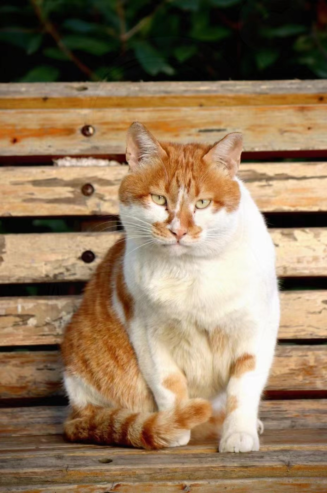
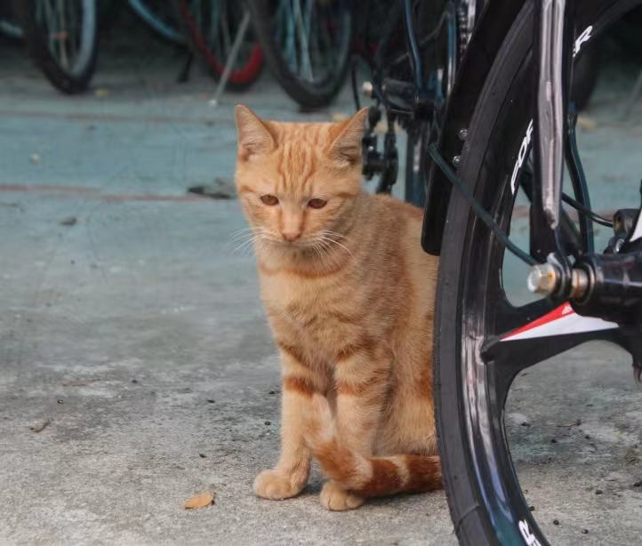

温柔橘
性别：公 已绝育
不确定是不是摩卡夫人的孩子，因为体型上在其他几只小的时候已经很大了，很温顺的小橘，不亲人，但可以靠近投喂。
橘座
性别：公
已绝育
可以说是宿舍区最有喜感的猫咪了，因为长年坐在电动车上等两脚兽投喂而获名，如果你在宿舍区撸不到小猫咪，去找电动车和咪咪，他们不会让你失望，自从电动车获得了了两脚兽长期饭票就日渐圆润起来，每天晒晒太阳、吃吃饭、坐坐电动车、小日子过得很滋润。
小富贵
性别：公
已绝育
上外贸拳王，身价上千，一拳七百。出拳速度快，首先会用喵喵叫迷惑你，其次使出必杀技清纯的小尖脸诱食，等你靠近的时候给你一拳。别靠近，会变得不幸。
富贵爹
性别：公 未绝育
力气挺大的大公猫，至今没绝育，抓捕失败还欠六佰个抄网，折尾(不清楚什么时候折的)，每天神出鬼没，和吐司它们亲近一些。

呜呜
性别：公 已绝育
发福男妈妈+1，因为喜欢叫且叫声很特别，获得了更多的关注。带大了三橘子后，独自隐居在草从中，偶尔会和怕怕一起在草丛里睡觉，两分钟不吃饭就饿了。两只猫也会为了一根猫薄荷棒大打出手。
淮南
性别：公 未绝育
白色大脖领，贪吃橘+1。孩子有个怪习惯，喜欢殴打冻干再把冻干吃掉。是橘二的孩子、跟火锅关系好。
二郎神
性别：公 已绝育
工程大来的交换生之,虽然是隔壁搬家来的小猫，蹭吃蹭喝绝不客气，因为额头上有块白得名二郎神。很能吃，看到人靠近会大叫着跑开。

橘二
性别：母 未绝育
呜呜和怕怕养大的三只小橘中的中橘，还没接受子宫or蛋蛋保养。和橘大、橘三是一窝，长大后还是喜欢跟呜呜待在起
斑斑
性别：母 已绝育
隔壁来蹭饭且有定居趋势的猫猫，是圆脸橘的妹妹成为了阿狸的日常玩伴+饭友之一。心情好的时候勉强可以摸一下。